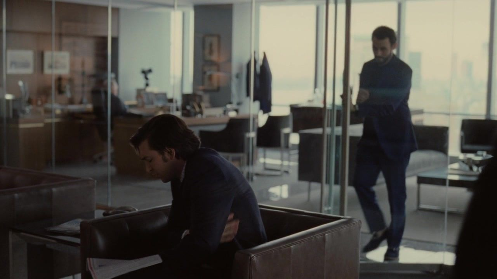
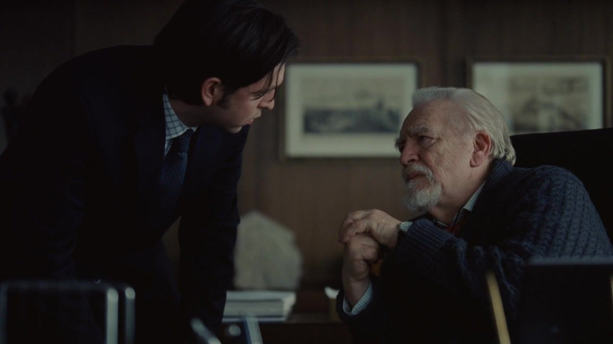
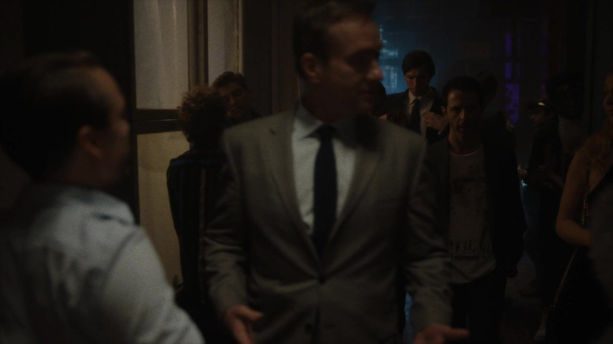
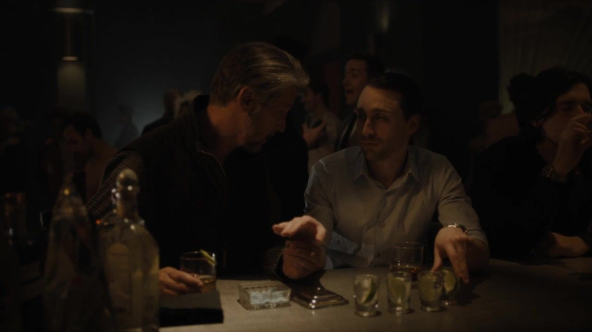
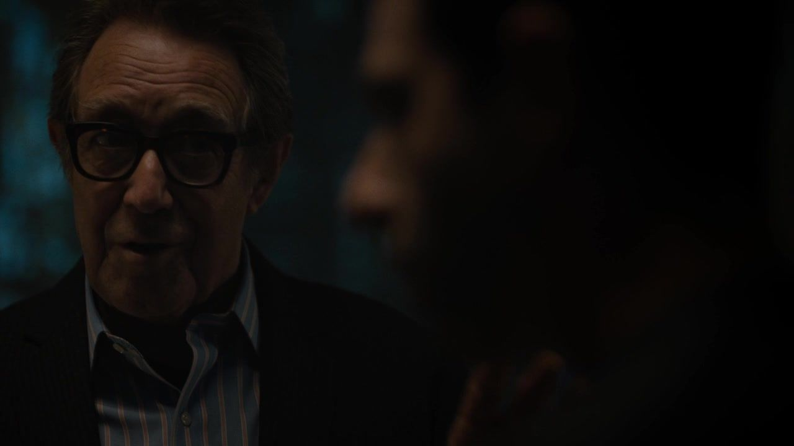
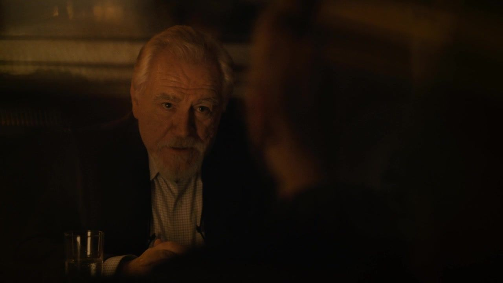
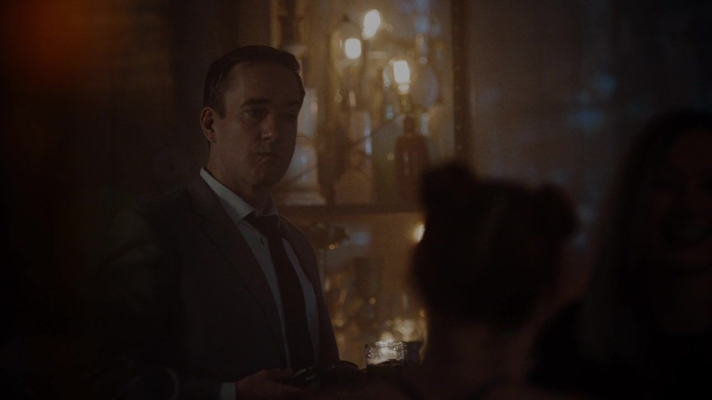

白天 / 新投资尝试
他想当新世界的伙伴，别人仍把他看成旧世界。


THE ROY FAMILY / 罗伊家族档案 008
SEASON 01 EPISODE 08 Prague
单身派对没有去布拉格。
他们走进一座地下世界，把白天的交易带进狂欢。
剧透边界 包含 S01E01—08 剧情及本集结尾，不涉及后续集数。
剧情事实 / 个人解读分别标注 · 约 18 分钟阅读THE QUESTION / 从这里读起
牧场之后，肯德尔试着以投资人的姿态开启新生活，却发现姓氏比自己的承诺先抵达别人面前。罗曼负责汤姆的单身派对，也背着父亲交付的商业任务；格雷格则被派去看顾肯德尔。所有人都像来放松，几乎每个人又都带着不能放下的工作与关系。所谓离开日常，最终只是让日常在更暗的灯光下继续。
公司 谁拥有正式的权力？
家庭 谁仍在等父亲的点头？
阶层 谁可以把别人的人生当游戏？
01 / THE STORY
按本集主线分为三幕；并行发生的谈话与善后，保留其交错关系。
ACT I / SCENES 01—03
白天 / 新投资尝试
公司与朋友 / 派对改址

洛根与格雷格 / 一项特殊差事

这一幕之后肯德尔想换个世界，罗曼与格雷格却仍在执行父亲的安排。
ACT II / SCENES 04—06
地下聚会 / 汤姆第一次进入

兄弟间 / 笼子与狗粮

派对里的生意 / 罗曼碰上另一套资本

这一幕之后狂欢没有消除等级，也没有让兄弟对同一段童年达成一致。
ACT III / SCENES 07—09
另一边 / 希芙与洛根

派对后半 / 一次被说成趣闻的越界

退出报价 / 第二次夺权
这一幕之后父女对峙延伸到婚礼，汤姆的越界加深不安，肯德尔选择联手敌人。
02 / THE PEOPLE
看清家人的位置，再看他们为什么不能轻易站在一起。
 洛根Logan Roy
洛根Logan Roy 玛西娅Marcia Roy
玛西娅Marcia Roy 肯德尔Kendall Roy
肯德尔Kendall Roy 康纳Connor Roy
康纳Connor Roy 罗曼Roman Roy
罗曼Roman Roy 希芙Siobhan “Shiv” Roy
希芙Siobhan “Shiv” Roy 格雷格Greg Hirsch
格雷格Greg Hirsch 汤姆Tom Wambsgans
汤姆Tom Wambsgans
罗曼筹办派对兼有商业任务，格雷格则受托看顾肯德尔。
笼子往事有多个版本，本页不把任何一人的记忆当成已完成的客观调查。
本集只是提出新的收购方向，尚未取得公司控制权。
图示为截至本集的亲属关系与依赖归纳，阶段说明含个人解读，不是正式公司架构；实线与虚线不表示所有人已互相知情。人物头像跨集复用，来源集数在篇末登记。
03 / FOLLOW THE CONSEQUENCE
跟踪肯德尔怎样把退出报价改写为收购提议。
他先尝试以独立投资人身份开始。
约五亿美元可以让他卖出权益。
他选择与父亲的对手争夺控制。
04 / BENEATH THE ARGUMENT
本集三组冲突，分开看表面问题、双方诉求与更深的依赖。以下为个人解读。
BENEATH THE ARGUMENT / 个人解读
肯德尔要获得足够独立、也足够响亮的胜利。
资本一方要一个能落实、能带来收益的方案。
如果需要的只是生活不受父亲干预，退出报价已经提供了非常优厚的条件。他拒绝说明，父亲仍然是他衡量成功的核心观众。
新的进攻更主动，却未必更自由。为了不再依赖父亲任命，他转而依赖投资人；他能作出选择，也必须面对选择把公司和自己带入怎样的关系。
事实边界未在本集完成收购或正式取得 CEO 任命。
BENEATH THE ARGUMENT / 个人解读
罗曼想让自己的难受被认真承认。
哥哥们认为事情另有玩法与细节。
记忆会变化，叙述也可能防御。但不知道全部细节，不表示罗曼的感受就没有真实性。笑着澄清的人，可能再次占据当年更有解释权的位置。
反过来，感受真切也不能让每个细节自动成为确定史实。这里需要保留两层：他们尚未达成共同记录，以及某些人显然比别人更痛。
事实边界不替观众裁决食物究竟是什么，也不拿后续回忆倒推。
BENEATH THE ARGUMENT / 个人解读
汤姆想被同伴接纳，也想减少婚前的不安。
同伴以刺激与嘲笑不断抬高融入的门槛。
现场像允许人做任何事，实际却不断给人新的考题。汤姆一旦不愿意，就可能显得扫兴或不够懂行；他越努力把经历说得精彩，越显出自己在等待认可。
这与洛根家中服从的方式遥相呼应：权力不总是说不许，有时说“你当然可以”，再让人自己跨过不舒服的边界。
事实边界只描述本集发生的性接触，不将其写成希芙事先同意的安排。
05 / BETWEEN THE LINES
把短句放回场景，听清一段关系怎样改变。
肯德尔 → 创意团队
I'm the asshole who can be your Warhol.我就是那个能当你们沃霍尔的混蛋。中文自译
说话时刻推介自己的资金与资源时。
个人解读他想用艺术伙伴的比喻拉近距离，却仍在急着规定自己应被怎样看待。
肯德尔 → 桑迪
I'm not getting out.我不会退出。中文自译
说话时刻收到买下其权益的报价后。
个人解读这句拒绝划清了他真正想要的东西：钱和离场还不够。
肯德尔 → 桑迪
Keep your money.把你的钱留着。中文自译
说话时刻准备提出联手收购之前。
个人解读他拒绝的只是这笔钱的原定用途，接着就要让同一方资本支持自己的进攻。
三句共 15 个英文词，核对自本集非官方对白转录；中文为本页自译。“说话时刻”为情境概括，解读并非人物明确说出的意图。核对转录 ↗
06 / WATCH AGAIN
只讨论截至本集的呼应，不借后续情节倒推人物。以下为个人解读。
END OF EPISODE 08 / 本集停在这里
门外的新生活没有让他安定。
父亲的公司，重新成为证明自己的地方。
当私人复仇需要外部资本，它还完全属于自己吗？
肯德尔提出联手敌意收购；洛根暂称不参加婚礼；汤姆在派对中越界。
收购能否推进、洛根是否最终到场，以及婚礼前的关系如何处理。
剧透截至 S01E08，不先写婚前谈判与季终事故。